LatentStereo
Latent Diffusion Warping for Text-to-Stereo Generation
Israel Ben David · Lab meeting · with Noam & Dani Lischinski · HUJI
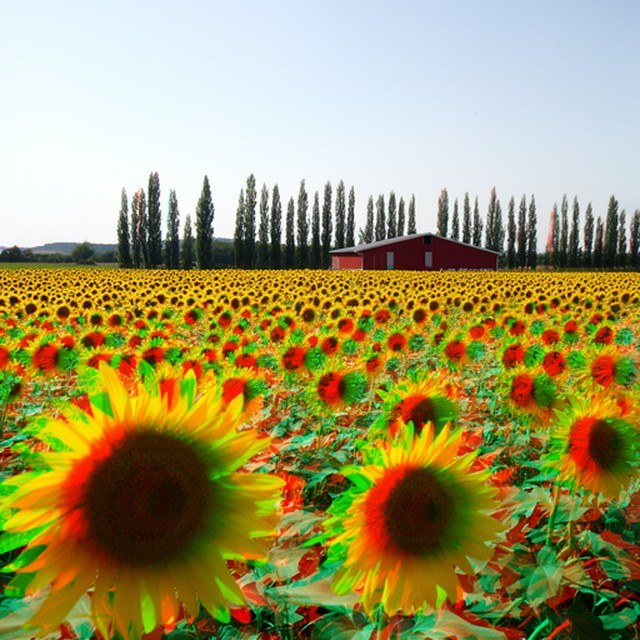
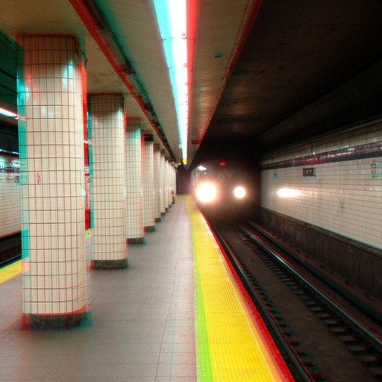
→ advanceW wiggle mode if you have no glassesN notesF fullscreen? all keys
Spatial computing needs stereo content — and there is no way to make it from text.
Headsets render two geometrically consistent views for binocular vision. Producing that content today means labour-intensive pipelines inside graphics engines — a bottleneck on the scale and diversity of immersive media.
- Generative AI produces 2D images and video at scale — but text → stereo remains open.
- Existing work does mono → stereo only: first generate a picture, then lift it. Two systems, two failure modes.
- What we want: a frozen 2D model that emits a geometrically locked pair, natively, in one pass — for images and video.
Right: text-to-stereo images from FLUX.2 [dev] and a text-to-stereo video from Wan 2.1, all produced by the method in this talk. Hover a tile for display modes.
Stereo generation today is a two-step affair — and the second step is where it breaks.
Trained converters
Fine-tune a model to predict the right view from a given left. High fidelity — but needs stereo training data, and the disparity distribution is baked into the weights: no explicit control over how deep the result is.
Training-free converters
Warp the finished pixels by estimated depth and inpaint. Cheap, controllable — but they operate on committed pixels: every depth edge becomes a hole a separate module must repair, and the seams show.
Both paradigms stay anchored to a pre-existing 2D generation. The open question:
can a single sampling pass keep the fidelity of trained converters and the efficiency and disparity control of training-free ones?
Every existing method consumes a finished image — disparity is either baked into weights or applied to finished pixels.
Trained converters
- GenStereo — trained generator conditioned on the depth-warped left, correspondence-aware fusion
- StereoSpace — drops depth; viewpoint-conditioned diffusion in a canonical stereo space (768²)
- Text2Stereo — fine-tunes SD to emit side-by-side pairs from text; image-only
- StereoWorld — stereo LoRA on Wan 2.1, lifts a clip with a second full sampling pass
- StereoCrafter — DepthCrafter depth → per-frame warp → trained SVD inpainter
- Deep3D, SpatialDreamer, Eye2Eye — end-to-end / self-supervised / warp-free variants
Training-free converters
- ZeroStereo — depth warp in pixel space + SD inpainting of the disocclusions
- StereoDiffusion — shifts left latents into a right branch mid-sampling of SD — closest in spirit. But it copies cells with no account of the noise law, holes inherit neighbours, it is pinned to one model at 512², and its depth stays shallow
- SVG — denoises a depth-warped frame matrix under frozen Zeroscope, frame by frame
Explicit 3D
- Lyra — distils a video model into 3D Gaussians and renders the second eye from a shifted camera
Tools we build on
- HIWYN, Go-with-the-Flow — distribution-preserving noise warping, used across time for temporal coherence of a single view
- SDEdit / ODE inversion — placing real content on a sampling trajectory
| method | needs stereo data | disparity control | works on | text → stereo image | text → stereo video | backbone |
|---|---|---|---|---|---|---|
| trained converters | yes | baked in | finished image | Text2Stereo only | — | fixed |
| training-free converters | no | explicit | finished pixels / latents | StereoDiffusion (SD, 512²) | — | mostly fixed |
| explicit 3D (Lyra) | 3D supervision | camera | per-scene reconstruction | — | — | fixed |
| LatentStereo | no | inference-time knob | a semi-noised latent | yes | yes — first of any kind | any (5 tested) |
One observation: a depth-based warp is far more forgiving midway through denoising than on a finished image.
So don't lift a finished picture. Sample the left view as usual, and at an intermediate step fork the trajectory: warp the noisy latent to the right viewpoint and let both views finish denoising together.
- The remaining steps absorb disocclusions and warping errors — there is no hole to inpaint, only fresh noise that has not been denoised yet.
- The shared noise realisation keeps the two views geometrically locked.
- Disparity is picked at inference time; nothing is trained; the backbone is exchangeable.
- Existing footage can be inverted to the branch point — so one mechanism serves text→stereo and mono→stereo, for images and video alike.
pixel space warp the finished image
finished left → forward warp → 2.5% holes (close-up: along the silhouette) to inpaint with a separate model, seams along every edge.
latent space, mid-trajectory warp the noisy latent
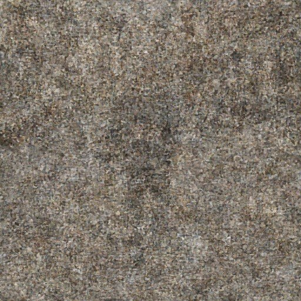
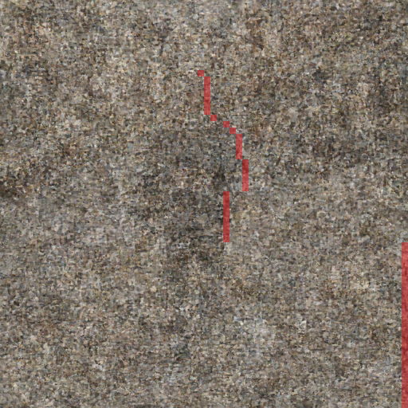
noisy left at tw → warped (red: 1.3% of cells get fresh noise) → 25 more denoising steps → a clean right view, no inpainter.
Same run, same disparity budget (24 px). The only difference is when the warp happens.
LatentStereo branches a single sampling trajectory. Every component is pretrained and frozen.
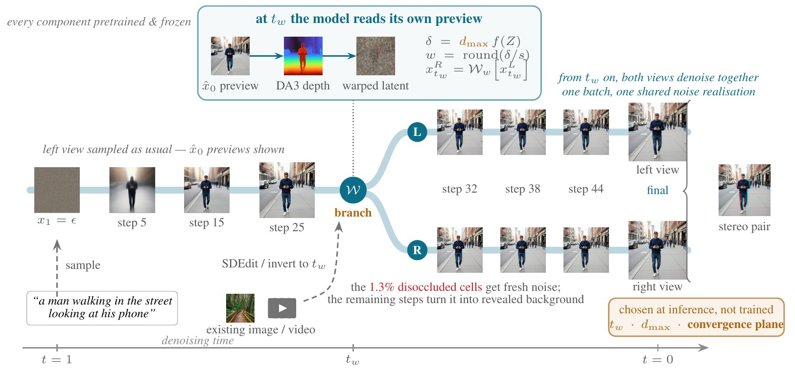
The sampler always holds a preview of its finished image — and the preview's layout freezes early.
Flow matching, in the notation used throughout:
Rearranging the interpolant gives the clean-sample prediction at any step — free, no extra forward pass:
- Backbones work on a VAE latent grid \(\Lambda\); one cell = an \(s\times s\) pixel patch (\(s=16\) for FLUX.2 and Wan, \(8\) for SD2).
- Five backbones, frozen: SD2 (UNet), FLUX.2 [dev] / [klein] (image DiT), Wan 2.1, LTX-2 (video DiT).
Scrub one FLUX.2 trajectory
every 5th of 50 steps · drag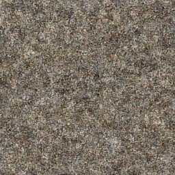
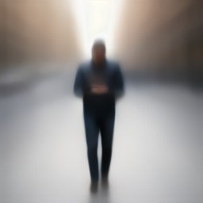
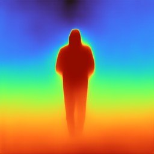
Layout settles long before texture: from about step 10 the depth of \(\hat{x}_0\) barely changes, while the latent itself is still mostly noise. That gap is what we exploit.
In a rectified pair, depth becomes a horizontal shift — and we make its scale a knob.
Coplanar image planes, parallel optical axes: a 3D point lands at \((x_L,y)\) and \((x_R,y)\) — same row, different column.
From a monocular depth map \(Z=\Phi(\cdot)\) we build the dense disparity field, anchoring the zero-disparity (convergence) plane at the farthest content and the user's maximum on the nearest:
On the latent grid the warp needs whole cells:
Whatever \(\Phi\) gets wrong is only a warp error — and the steps after the branch are there to repair warps.
The disparity dial
same scene · same seed · same frozen modelDisparity is an inference-time parameter, not a constant baked into trained weights. At 0 px the two views are identical; the fringe grows with the dial, on the near man first.
Warping noise the ordinary way destroys it: blending neighbours shrinks variance and correlates cells.
A denoiser is trained on exactly one thing: white Gaussian noise mixed into images. Feed it a warped noise field that is no longer white — lower variance, spatially correlated — and it produces visible artefacts.
- Bilinear / any interpolation: each output cell is a weighted average of neighbours. A 50/50 blend of two independent unit Gaussians has std \(1/\sqrt2\approx0.71\) — and adjacent outputs now share inputs.
- What we need: move the noise to the new viewpoint while its joint law stays exactly \(\mathcal N(0,I)\).
- The fix (HIWYN, Go-with-the-Flow): treat noise cells as indivisible units — round the displacement to whole cells, route each cell to one destination, merge collisions with a \(1/\sqrt{k}\) scale, and refill vacated cells with independent fresh draws.
Left: watch the std of the resampled region drop toward 0.7 as the object's cells are blended. Right: same field, same displacement, the moved cells keep unit variance.
Move cells, merge collisions with \(1/\sqrt{k}\), refill holes with fresh draws — and the warped field is again exact white noise.
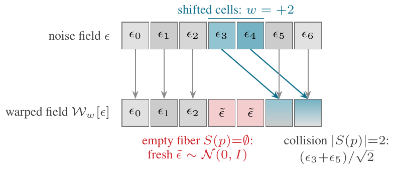
Proposition. If \(\epsilon\) is i.i.d. standard Gaussian, then \(\mathcal W_w[\epsilon]\overset{d}{=}\epsilon\).
- Marginals: \(k\) independent standard Gaussians summed and scaled by \(1/\sqrt k\) is again standard Gaussian.
- Independence: \(w\) maps each source cell to one destination, so the fibres \(\{S(p)\}\) are disjoint — distinct outputs come from non-overlapping inputs, or from independent fresh draws.
- The output is a perfectly valid diffusion state, statistically identical to a fresh noise tensor.
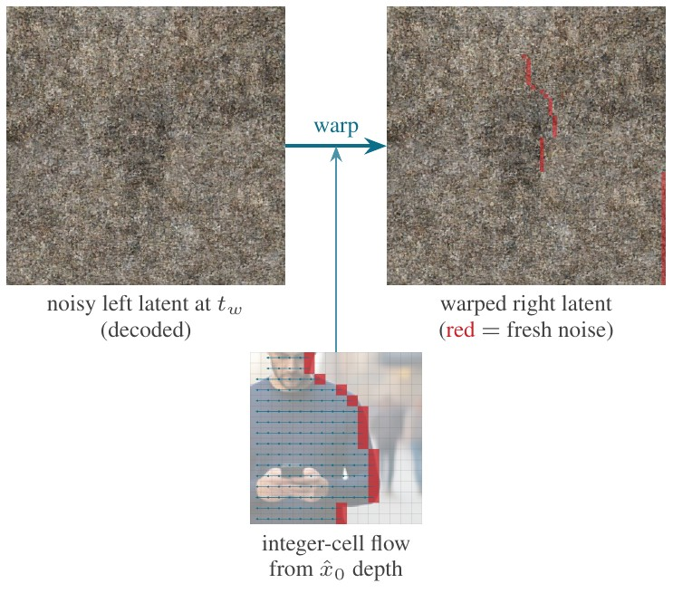
On the real thing. The decoded noisy left latent at \(t_w\) (looks like grain — decoded noisy latents carry no visible image), the integer-cell flow read off the \(\hat{x}_0\) depth (2 cells on the near man, 0 where disparity rounds away), and the warped right latent with the 53 disoccluded cells in red.
Prior work (HIWYN, Go-with-the-Flow) warps complete noise across frames for temporal coherence. We repurpose the operator: across viewpoints, on a semi-noised latent, with no training anywhere.
At \(t_w\) the model reads its own preview: prediction → depth → disparity → integer-cell flow.
step 25 of 50
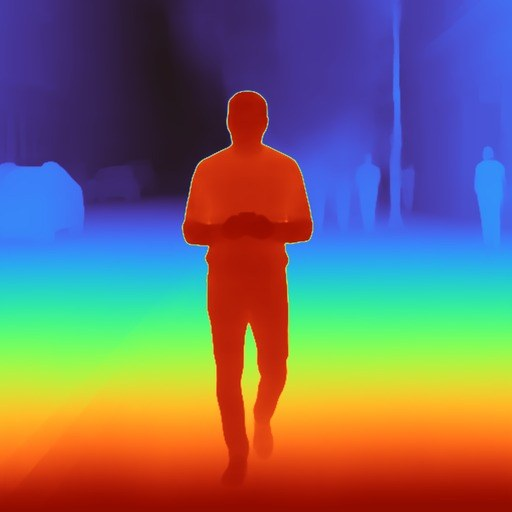
DA3, red = near
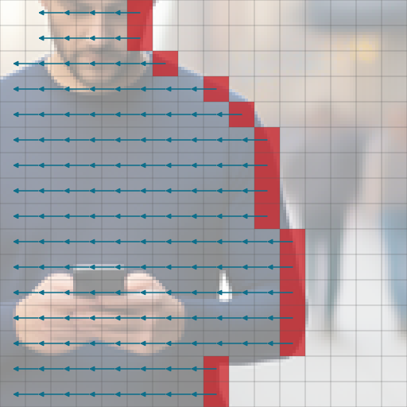
16×16-cell window; red = disoccluded
decoded; red = fresh noise
- Depth on the preview, not on the latent. \(\hat{x}_0\) is a plausible image at every step; a monocular estimator (Depth Anything 3) reads it like any photograph. For video, \(\Phi\) processes the whole decoded clip at once, so the depth is itself temporally consistent.
- One cell = \(s\) pixels. FLUX.2 and Wan: 16 px; SD2: 8 px. At \(d_{\max}=24\) px that is 1.5 cells, so the integer flow is 0 / 1 / 2 cells — coarse, and repaired by the denoising that follows (optionally with a sub-cell decode-space correction).
- Disocclusions arrive as fresh noise, not holes. In this run, 53 cells — 1.3% of the grid — tracing the silhouette edge.
- Cost: one VAE decode + one depth pass at \(t_w\). The right view then rides along in the batch.
The only user choices
tw branch step dmax maximum disparity convergence the zero-disparity plane — all at inference, none trained.
Why warping a semi-noised latent is legitimate: signal and noise route independently.
\(\mathcal W_w\) is linear on occupied cells, so applying it to the mixture applies it to each part:
- The noise fraction maps to exact white Gaussian noise (the proposition).
- The signal fraction is transported to the right viewpoint by whole cells.
- Disoccluded cells carry zero signal and a fresh draw — the state of a pixel the model has not started to generate.
- Outside the disocclusions the right view shares the left's noise realisation. That is what will lock the pair.
The warped latent is a statistically valid diffusion state at \(t_w\). The denoiser cannot tell it was warped.
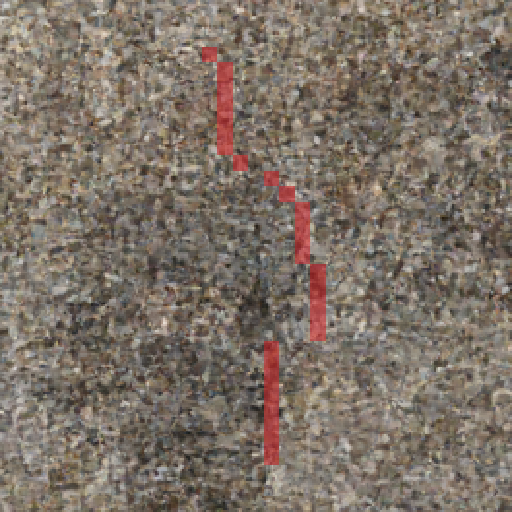
From \(t_w\) on, both views denoise as one batch — the shared noise realisation locks them together.
Right-view \(\hat{x}_0\) previews after the branch (the left continues unchanged above it in the batch):
one step after the branch — already a coherent shifted view
- Identical conditioning and schedule for both views: the same prompt, the same steps, the same CFG. Nothing is trained, nothing is masked.
- Disocclusions resolve from noise into coherent background during the remaining steps — the model does with them what it does with any noise.
- Geometric lock: both trajectories share one underlying noise structure, so textures and fine details land at corresponding positions in the two views instead of being re-imagined.
- Warping errors are absorbed, not committed: a wrong depth edge is a slightly wrong latent that 25 more steps smooth over — not a seam in finished pixels.
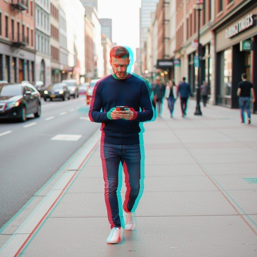
Output
A stereo pair from a single sampling pass: one left-view trajectory, one branch, one batch of two.
The same fork converts existing media: only the way the left trajectory reaches \(t_w\) changes.
Encode the input, project it to time \(t_w\) — by re-noising (SDEdit) or by ODE inversion — and estimate depth on the clean input itself:
- Images: SDEdit on SD2 (the emitted left is the model's re-render), or a native img2img reference on FLUX.2.
- Video: the clip is marched backwards along the sampler's own ODE to \(t_w\); the left is pinned (never denoised), so the task is strictly right-eye synthesis and source fidelity is exact by construction.
- From the branch onward: identical to text-to-stereo — same warp, same joint denoising.
Inversion note: the Wan port marches an AIDI-style fixed point; Uni-Inv (one call per leg) also works there once seeded from the interpolant rather than at t=0 — see wan_play/README.
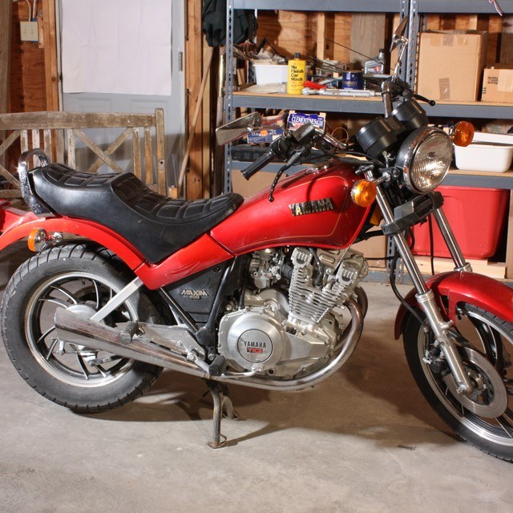
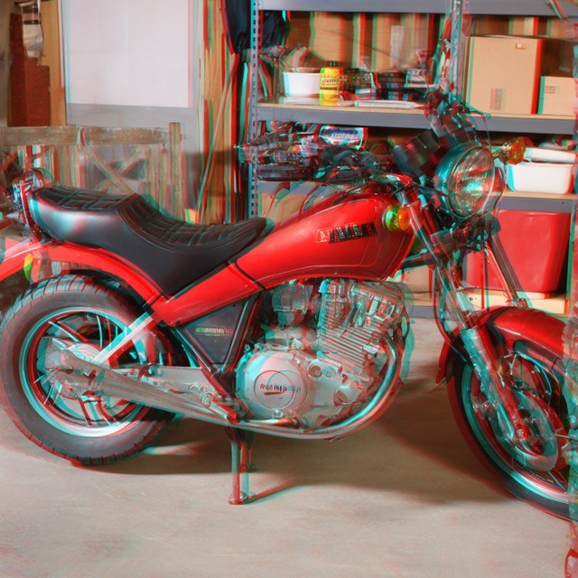
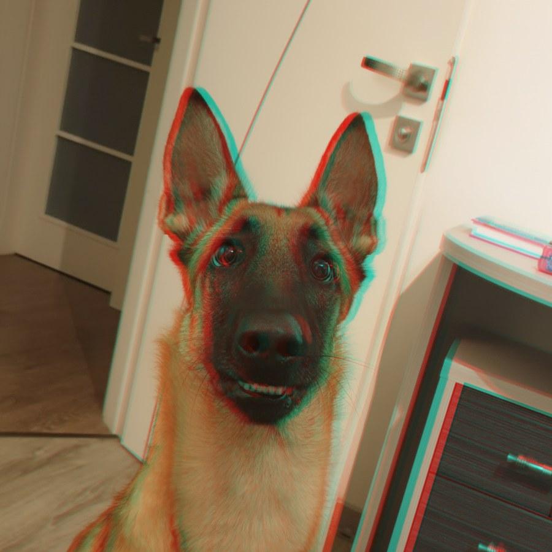
Branch with one to two thirds of the schedule remaining: early costs geometry, late costs the synthesized view.
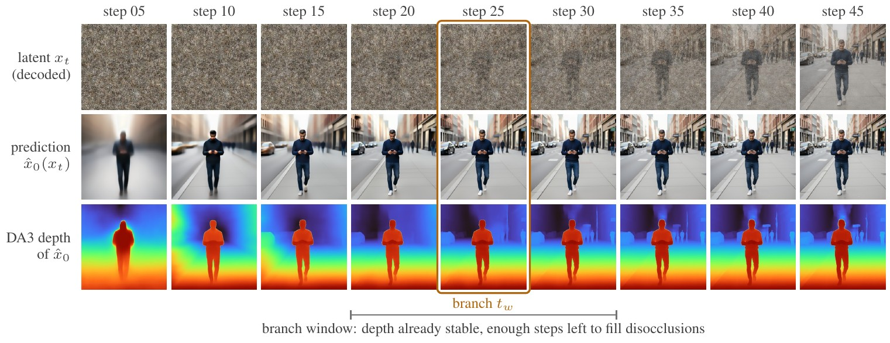
- Too early: the depth preview is not yet trustworthy and the right view still has room to drift — MEt3R falls from 11.5 at \(t_w=1\) to ≈4.2 once a third of the schedule has passed.
- Too late: fresh noise never becomes content — disocclusions dry into saturated blobs along near vertical edges. The pair metrics cannot see it (a pair that shares its whole trajectory is trivially consistent); TOPIQ on the right view alone can.
- iSQoE, judging the viewing experience of the pair, integrates both and is flat over roughly \(t_w=17\)–\(33\).
Per-backbone settings used everywhere: SD2 tw=30 FLUX.2 tw=20 Wan t2v tw=26 i2s tw=35 v2s tw=50/100
The trade-off, measured — every branch step of a 50-step FLUX.2 [dev] schedule
50 prompts · 512² · dmax=16 px · mean ± 1 s.e.m. · shaded: the window · amber: the tw used in the tablesOn the shared backbone we lead every column; swapping in FLUX.2 [dev] improves every pair metric at once — nothing retrained.
| method | backbone | iSQoE ↓ | MEt3R ↓ | CLIP-F ↑ | TOPIQ ↑ |
|---|---|---|---|---|---|
| StereoDiffusion | SD2 (512²) | 0.783 | 7.35 | 98.19 | 0.519 |
| ZeroStereo | SD2 | 0.713 | 3.39 | 99.45 | 0.605 |
| StereoSpace | SD2 | 0.735 | 17.33 | 96.32 | 0.609 |
| GenStereo | SD2 | 0.711 | 3.43 | 99.32 | 0.617 |
| LatentStereo | SD2 | 0.708 | 2.96 | 99.48 | 0.640 |
| LatentStereo | FLUX.2 [dev] | 0.603 | 2.06 | 99.76 | 0.536 |
- The three image-converting baselines start from our exact left view (same checkpoint, scheduler, seed) — rows differ only in the stereo stage.
- TOPIQ separates the group most cleanly (0.640 vs 0.617): warp-and-inpaint pays for its seams in right-view quality; a mid-trajectory branch never does.
- FLUX.2: iSQoE 0.708 → 0.603, a larger step than the whole spread of published methods, from the backbone alone. (Its TOPIQ is a blind score of its own content, not the shared rendering.)
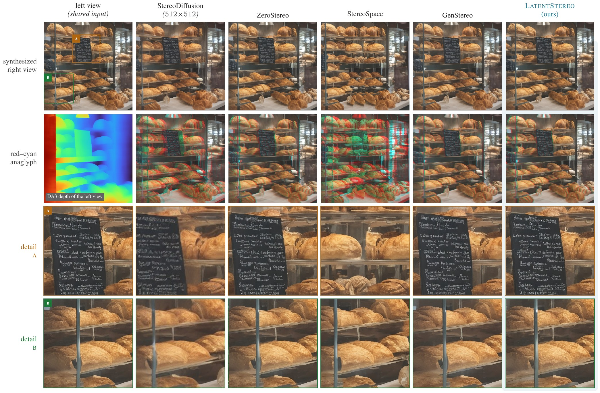
One prompt through every method (bakery counter). Detail A, the chalkboard: StereoSpace replaces it with bread, GenStereo bows it and smears the chalk, StereoDiffusion's inversion reconstructs a different board; ZeroStereo and ours carry it intact. Detail B, the near glass upright — the widest disocclusion: GenStereo kinks it, StereoSpace bends it, StereoDiffusion loses it in blur. Click to zoom.
Lowest MEt3R of any published method on all four real-world benchmarks — with one fixed disparity and no per-scene calibration.
| method | Middlebury (23) | DrivingStereo (200) | Booster (64) | LayeredFlow (300) | ||||
|---|---|---|---|---|---|---|---|---|
| iSQoE ↓ | MEt3R ↓ | iSQoE ↓ | MEt3R ↓ | iSQoE ↓ | MEt3R ↓ | iSQoE ↓ | MEt3R ↓ | |
| StereoDiffusion | 0.748 | 19.33 | 0.789 | 10.15 | 0.725 | 20.11 | 0.805 | 30.74 |
| ZeroStereo | 0.742 | 20.57 | 0.796 | 7.98 | 0.750 | 31.71 | 0.811 | 36.30 |
| GenStereo | 0.693 | 13.39 | 0.785 | 7.28 | 0.690 | 14.57 | 0.768 | 22.75 |
| Lyra | 0.718 | 11.63 | 0.789 | 9.49 | 0.699 | 12.93 | 0.780 | 18.77 |
| StereoSpace | 0.683 | 8.93 | 0.783 | 7.17 | 0.676 | 10.13 | 0.749 | 16.19 |
| LatentStereo (SD2) | 0.700 | 7.32 | 0.790 | 4.39 | 0.677 | 7.03 | 0.730 | 7.43 |
| LatentStereo (FLUX.2) | 0.646 | 4.99 | 0.759 | 1.77 | 0.610 | 3.68 | 0.648 | 5.39 |
- LayeredFlow is built from transparent, multi-layered scenes that defeat depth-warping (ZeroStereo: 36.30). Our right view is produced by exactly that warp — but on the noisy latent, and 15 denoising steps repair what a single-surface disparity map gets wrong. 7.43 vs 16.19.
- FLUX.2 [dev] takes first place in every column, usually by more than separates the published methods from each other — MEt3R 1.77 on DrivingStereo, a quarter of the best baseline. Same mechanism; the gap is inherited from the backbone.
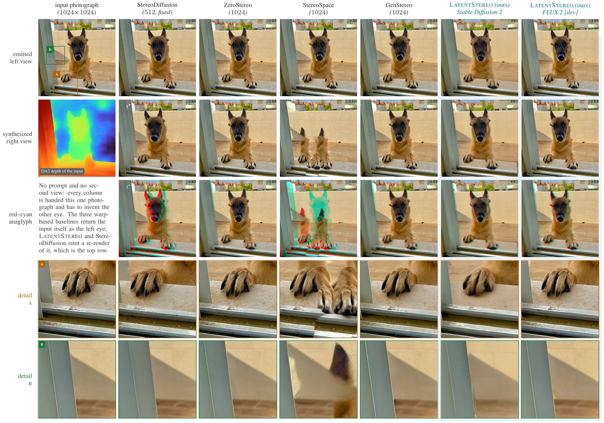
A photograph outside all four benchmarks. Depth-warping baselines and both of our rows agree on the geometry (16 px on the near upright) and separate in the details: a warp stretches the fine structure it drags — the claws sink into the fur — while a branch re-renders it. StereoDiffusion and StereoSpace have no pixel-disparity knob and realise 64–70 px, four times the matched columns.
Text → stereo video, in one pass: MEt3R 3.86 vs 5.70 for a stereo LoRA trained on the same backbone.
| method | iSQoE ↓ | MEt3R ↓ | CLIP-F ↑ | IQ ↑ | TF ↑ | AQ ↑ |
|---|---|---|---|---|---|---|
| StereoWorld | 0.735 | 5.70 | 97.34 | 0.696 | 0.992 | 0.554 |
| StereoCrafter | 0.738 | 8.01 | 95.26 | 0.686 | 0.991 | 0.567 |
| SVG | 0.773 | 11.91 | 95.96 | 0.673 | 0.977 | 0.466 |
| LatentStereo | 0.715 | 3.86 | 99.08 | 0.711 | 0.989 | 0.575 |
- The baselines convert our monocular clip, so any gap belongs to the stereo stage. Ours costs one sampling pass plus one depth estimate; StereoWorld spends a second full pass.
- The synthesized right view pays no price for having no inpainter: highest IQ and AQ in the table, above StereoCrafter whose SVD inpainter exists to protect that view. StereoWorld flickers marginally less (TF 0.992 vs 0.989).
- To our knowledge the first text-to-stereo video method of any kind, trained or not.
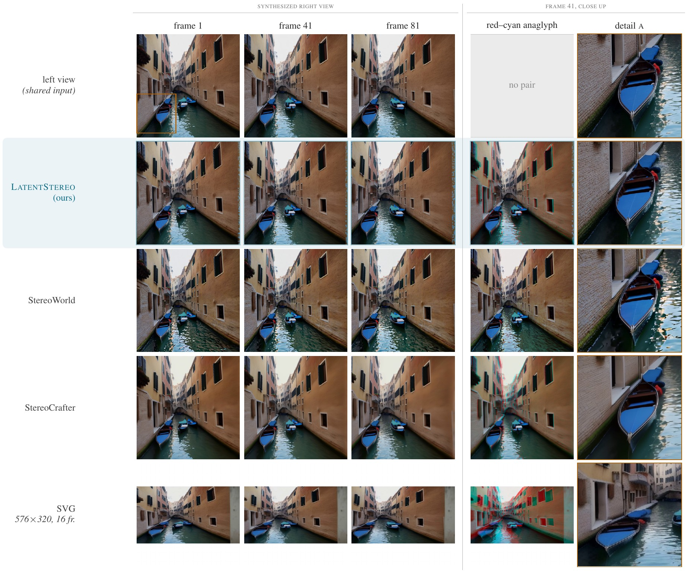
Venice canal, every method from our left view. The near boat is where they separate: StereoWorld barely lifts it off the wall, StereoCrafter smears the hull it drags, SVG displaces it out of the crop entirely. Realised parallax on the middle frame: 2.5 / 3.1 / 8.4% of the width vs our 1.7%.
On real Stereo4D footage the synthesized eye lands closest to the one the camera actually recorded.
| method | iSQoE ↓ | MEt3R ↓ | CLIP-F ↑ | IQ ↑ | TF ↑ | AQ ↑ | EPE ↓ | D1 ↓ |
|---|---|---|---|---|---|---|---|---|
| StereoWorld | 0.703 | 5.01 | 97.30 | 0.594 | 0.986 | 0.519 | 3.09 | 31.17 |
| StereoCrafter | 0.752 | 9.37 | 93.55 | 0.555 | 0.984 | 0.521 | 3.77 | 37.70 |
| SVG | 0.773 | 8.06 | 96.08 | 0.573 | 0.985 | 0.503 | 8.15 | 64.53 |
| LatentStereo | 0.702 | 3.84 | 97.98 | 0.590 | 0.985 | 0.509 | 3.02 | 30.48 |
- The one experiment with a real second view as reference — and the ordering matches the generated-video table.
- Realised parallax against a ~15 px rig: ours 11.3 px (0.76×), StereoWorld 6.8 (0.45×), StereoCrafter 36.2 (2.4×), SVG 59.9 (4.3×). MEt3R and CLIP-F reward less parallax, StereoWorld makes the least — and still loses both while we generate 66% more.
- Source fidelity: exact (left pinned) vs MAD 1.28 / 3.73 / 3.97 of 255 for pipelines that round-trip the clip.
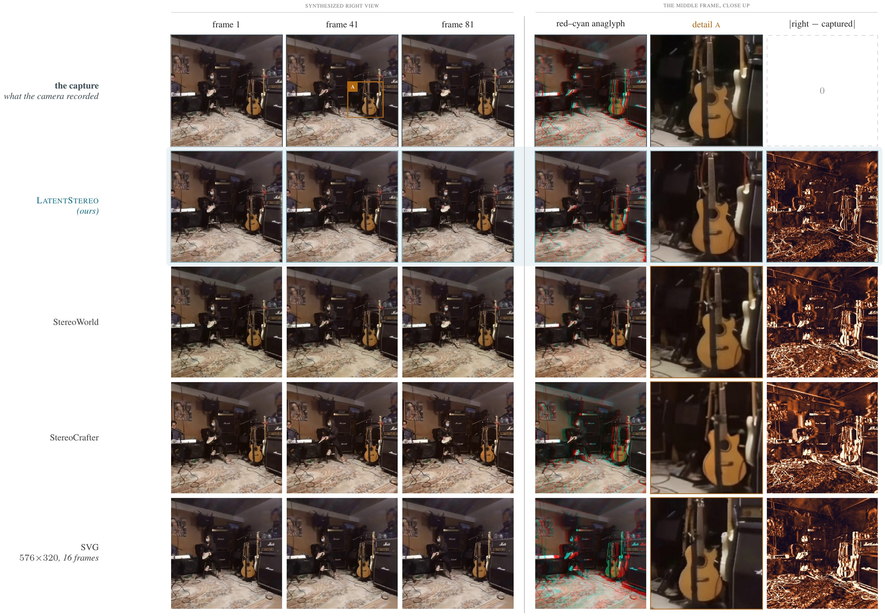
A music shop (clip 2610). Rightmost column is the absolute difference from the captured eye — EPE made visible. The near guitar: StereoCrafter and SVG stretch the body and smear the strings, StereoWorld barely separates it from the left, ours re-renders it and lands nearest the capture (mean error 14.4 vs 18.8 / 21.3 / 19.3 levels).
Sixteen scenes from FLUX.2 [dev] at 1024² — one seed, nothing trained. Click any tile.
One mechanism, four tasks, five backbones — and disparity stays a knob.
What LatentStereo is
- A training-free way to turn a pretrained image or video diffusion model into a stereo generator: fork the trajectory at \(t_w\) with a distribution-preserving latent warp, denoise both views jointly.
- Text→stereo and mono→stereo, images and video, from the same branch.
- Explicit geometric control: \(t_w\), \(d_{\max}\), convergence plane — at inference.
Why it works
- Layout freezes early: depth is readable off \(\hat{x}_0\) with half the schedule left.
- The warp is legitimate: signal shifts, noise stays exactly white, disocclusions arrive as fresh noise, not holes.
- The shared noise realisation locks the pair; the remaining steps absorb warp errors instead of committing them.
Evidence
- Leads MEt3R on every task and benchmark: 2.06 (t2i), 1.77–5.39 (i2s), 3.86 (t2v), 3.84 (v2s, against a captured eye).
- Stronger backbone → better stereo at zero cost (SD2 → FLUX.2 [dev]).
- First single-pass text→stereo video.
Limitations & what's next
- Whole-cell disparity quantisation (16 px per cell on FLUX / Wan); sub-cell repair helps, a finer latent grid would help more.
- Monocular depth errors become warp errors — repaired, but not corrected by a second view.
- A branch window has to exist: distilled few-step samplers leave little schedule to absorb the warp.
- Next: better inversion for real footage, multi-view beyond two eyes, LTX-2 at scale.
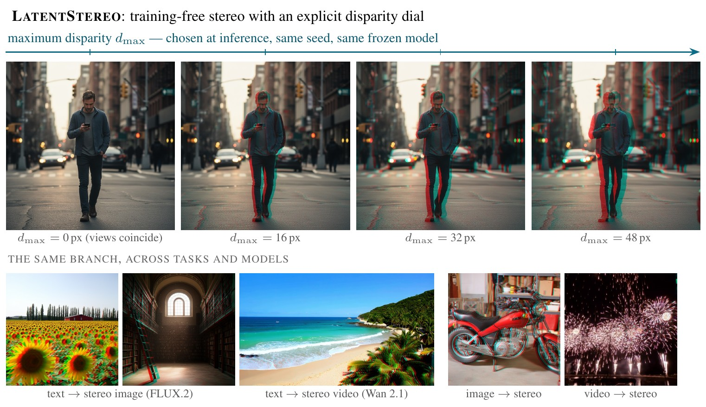
The same training-free branch: a scene at four disparity budgets; text→stereo image (FLUX.2), text→stereo video (Wan 2.1), image→stereo, video→stereo.
Questions?
LatentStereo — Latent Diffusion Warping for Text-to-Stereo Generation
this deck: www.ibendavid.com/latentstereo · G for the contents overview
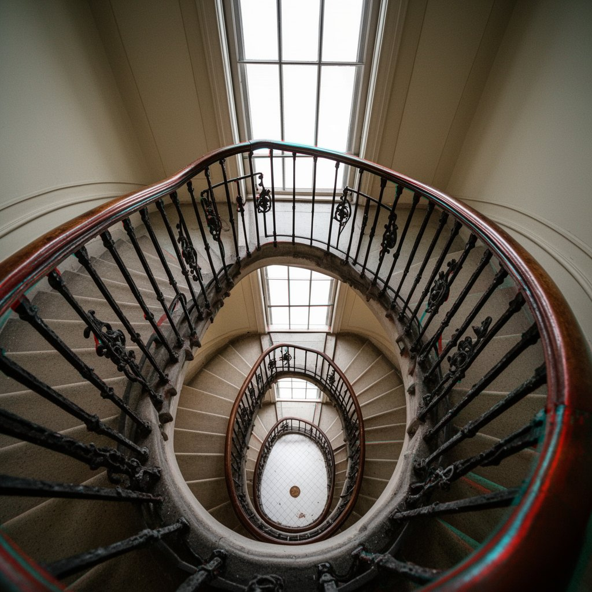